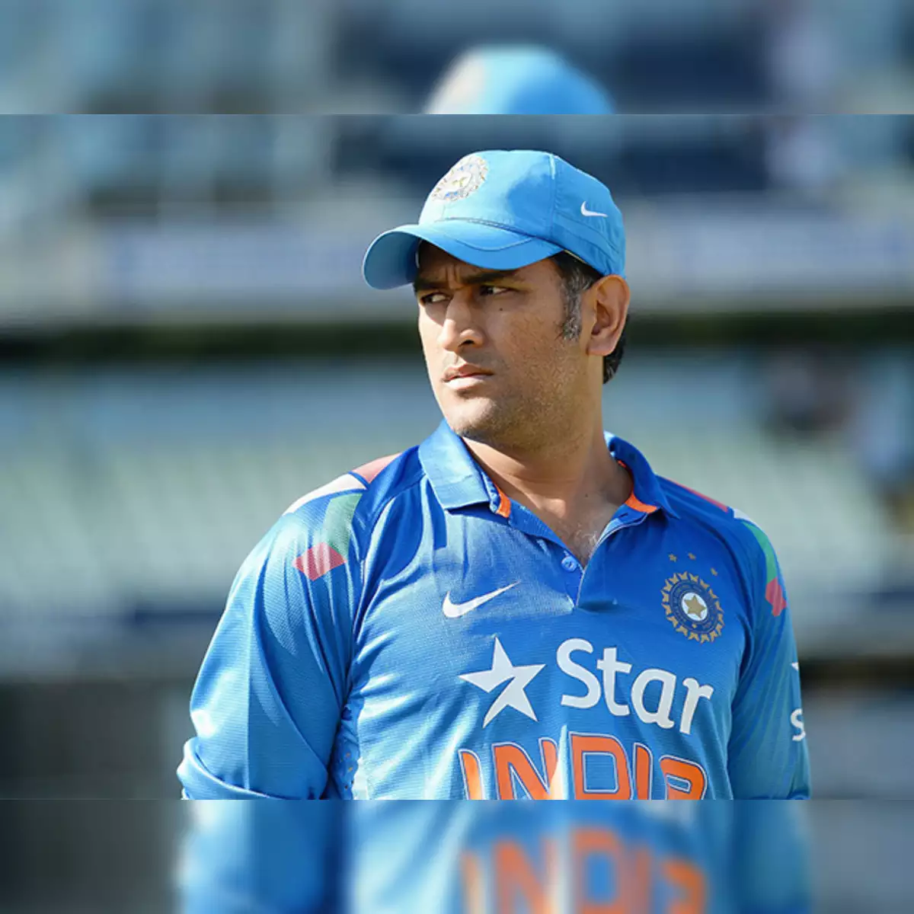
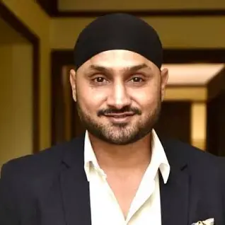

About My Favorite Cricket Player
 Sachin Tendulkar
Sachin Tendulkar
Tendulkar took up cricket at the age of eleven, made his Test match debut on 15 November 1989 against Pakistan in Karachi at the age of sixteen, and went on to represent Mumbai domestically and India internationally for over 24 years.endulkar has received several awards from the government of India: the Arjuna Award (1994), the Khel Ratna Award (1997), the Padma Shri (1998), and the Padma Vibhushan (2008).
The 2018 Asia Cup (also known as Unimoni Asia Cup for sponsorship reasons)[1] was a One-Day International (ODI) cricket tournament that was held in the United Arab Emirates in September 2018.[2] It was the 14th edition of the Asia Cup and the third time the tournament was played in the United Arab Emirates, after the 1984 and 1995 tournaments. India were the defending champions,[3] and retained their title, after beating Bangladesh by three wickets in the final
Harbhajan played for India from 1998 to 2016 as an off spin bowler. In domestic cricket, he played for Punjab cricket team; and in the Indian Premier League for Mumbai Indians, Chennai Super Kings, and Kolkata Knight Riders. Considered to have been one of the best spin bowlers of his era, he was in the Indian teams that won the 2007 T20 World Cup and the 2011 Cricket World Cup, and also their team that were joint-winners with Sri Lanka of the 2002 ICC Champions Trophy